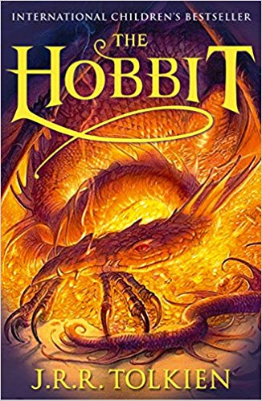
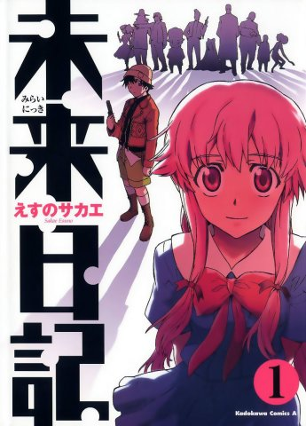

Livros
Home
Livro do Mes: One Piece

É uma série de mangá escrita e ilustrada por Eiichiro Oda.Conta as aventuras de Monkey D. Luffy, um jovem cujo corpo ganhou as propriedades de borracha após ter comido uma Fruta do Demônio acidentalmente. Com sua tripulação, os Piratas do Chapéu de Palha, Luffy explora a Grand Line em busca do tesouro mais procurado do mundo, o One Piece, a fim de se tornar o próximo Rei dos Piratas.
Autor:Eiichiro Oda


Senhor dos Aneis
O primeiro volume, A Sociedade do Anel, publicado em 1954
A Sociedade do Anel é a primeira parte da trilogia O Senhor dos Anéis,
considerado o melhor e mais respeitado livro de fantasia de todos os
tempos. A trilogia passa-se num lugar chamado Terra média que é
habitada por vários seres fantásticos, incluindo elfos e anões, magos e
dragões, trolls e orcs, hobbits (também chamado de pequeninos, por
causa da sua altura diminuta) e muitas outras criaturas e raças,
mágicas e míticas. A Sociedade do Anel começa no Condado, uma vila de
hobbits, onde conhecemos o herói principal da história, Frodo Bolseiro.
Quando o tio de Frodo, Bilbo
Autor:J.R.R.Tolkien.

Katekyō Hitman Reborn!
É uma série de mangá escrita e ilustrada por Akira Amano. O mangá conta a história de um menino chamado Tsunayoshi Sawada, que descobre que ele é o herdeiro para se tornar chefe da família Vongola, uma poderosa organização da Máfia. O assassino mais poderoso dos Vongolas, uma criança com uma arma chamado Reborn, é enviado para ensinar a Tsuna como ser o chefe da organização.
Autor:Akira Amano

O Hobbit
Inesperadamente, Bilbo Bolseiro, um hobbit de vida confortável e tranquila no Condado recebe a visita de 13 anões e Gandalf que o arrastam em uma jornada através das montanhas e das terras ermas enfrentando elfos, orcs, trolls, wargs, para o resgate de um tesouro muito bem guardado por Smaug, o Dragão. Bilbo se vê em diversas confusões e encontra algo que mudaria não só sua vida como de toda Terra Média.
Autor:J.R.R.Tolkien.

Tokyo Ghoul
Em Tóquio, criaturas conhecidas como ghouls vivem entre os humanos e os devoram para sobreviver. Dentre eles, o jovem universitário Ken Kaneki leva uma vida pacata entre livros, até que um trágico encontro o coloca diante desses seres e o obriga a lutar por sua humanidade.
Sui Ishida.

Soul Eater
O manga conta a história de uma escola fictícia chamada Shibusen, localizada no estado americano de Nevada, criada para eliminar os Ovos de Kishins, que são seres que usam a alma de humanos (em geral devorando-as) para se tornarem mais poderosos, e as bruxas que vivem aterrorizando o mundo. Geralmente bruxas são muito poderosas. Os encarregados de eliminar esses seres são os artesãos, que além de eliminar os Kishins, devem ajudar suas armas a se tornarem armas de Shinigami (Diretor e criador da Shibusen), para que ele use a como sua própria arma. Os artesãos devem fazer suas armas devorarem 99 Ovos de Kishin e uma alma de bruxa para se tornarem armas da morte ou armas de Shinigami.
Autor:Atsushi Okubo

Hunter x Hunter
A história tem como protagonista Gon Freecss, um menino de 12 anos que quer encontrar o seu pai a todo o custo, então ele decide se tornar um "Hunter", assim como ele, e de alguma forma encontrar o seu paradeiro. À medida que a história avança, Gon faz amizade com outros três Hunters aspirantes: Leorio, Kurapika e Killua, que o acompanham em suas aventuras.
Autor: Yoshihiro Togashi
Yu YU Hakusho
A série conta a história de Yusuke Urameshi, um adolescente delinquente de quatorze anos de idade que é atingido e morto por um carro ao tentar salvar a vida de uma criança. Após uma série de testes apresentados a ele por Koenma, o filho do governante do submundo, Yusuke é revivido e é lhe dado o título de "Detetive Sobrenatural", com o qual ele deve investigar vários casos envolvendo demônios e fantasmas no mundo humano.
Autor: Yoshihiro Togashi

Mirai Nikki
Yukiteru é um garoto de 14 anos que poderia ser considerado estranho. Com dificuldade para fazer amigos, para ele a vida não passa de um grande reality show, onde ele é mais um espectador. Tudo que ele vê, resolve anotar em seu celular, fazendo dele seu diário. Mais estranhas ainda são as atitudes do garoto, que tem como amigos imaginários um deus dominador do tempo e espaço, denominado Deus Ex-Machina, e sua assistente, Muru-Muru. No entanto, não era realmente só imaginação… Yukiteru ganha desse deus o poder de prever o futuro com seu celular, tornando-se esse então o seu diário do futuro.
Autor: Sakae Esuno

Death Note
A história centra-se em Light Yagami, um estudante do ensino médio que descobre um caderno sobrenatural chamado "Death Note", no qual pode matar pessoas se os nomes forem escritos nele enquanto o portador visualizar mentalmente o rosto de alguém que quer assassinar. A partir daí Light tenta eliminar todos os criminosos e criar um mundo onde não exista o mal, mas seus planos são contrariados por L, um famoso detetive particular.
Autores: escrita por Tsugumi Ohba e ilustrada por Takeshi Obata.
Assassination Classroom
A história é sobre a classe 3-E do Colégio Kunugigaoka, onde todas as manhãs, cumprimentam seu professor com um pelotão de fuzilamento em massa. O professor é uma combinação estranha de um alienígena e um polvo que se move a velocidades de Mach-20. Essa criatura é responsável por destruir 70% da lua,tornando-a sempre em forma de lua crescente. Ele anunciou que vai destruir o mundo em 1 ano. A criatura vai ensinar a classe 3-E como assassiná-lo antes do ano terminar. Mas como pode esta classe de desajustados matar um monstro tentacular, capaz de atingir velocidades de Mach 20, que pode ser o melhor professor que qualquer um deles poderia ter?
Autor:Yuusei Matsui